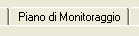
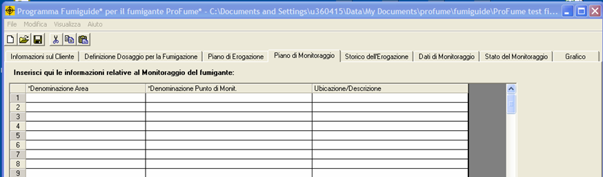
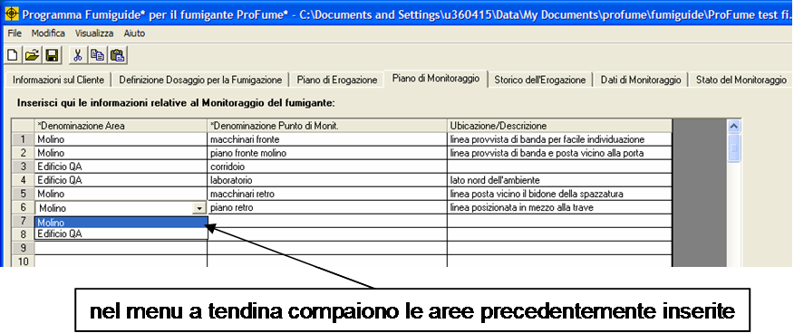
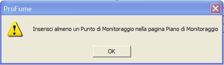

Tab
Piano di Monitoraggio
Una volta definito il Piano di Erogazione, si può passare
alla fase successiva impostando il Piano di Monitoraggio. Il Piano di
Monitoraggio è il quarto tab di ProFume Fumiguide predisposto per inserire le informazioni relative alle linee di monitoraggio (punti di monitoraggio per area).

Lo scopo del Piano di Monitoraggio
consiste nell’organizzare i punti di monitoraggio per area/aree dello spazio sottoposto a fumigazione. E’ possibile inserire l’Ubicazione/Descrizione relativa al posizionamento delle linee di monitoraggio. Ecco un esempio del tab Piano di Monitoraggio prima dell’inserimento delle informazioni relative alle linee di monitoraggio:

Notare che nell’esempio sottostante sono presenti quattro punti di monitoraggio nella struttura molino. Le denominazioni delle aree sono disponibili nel menu a tendina.

Messaggi
di avvertimento associati al Tab Piano di Monitoraggio
In questo tab occorre inserire almeno un punto di monitoraggio per poter poi monitorare la concentrazione del fumigante durante il Periodo di Esposizione.

Procedendo si vedrà che nel tab
Dati di Monitoraggio potranno essere inseriti esclusivamente dati relativi ai
punti di monitoraggio creati nel tab Piano di Monitoraggio.